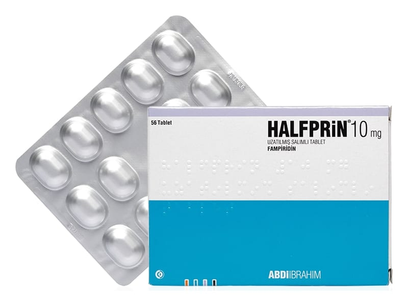

Halfprin 10 mg Uzatılmış Salımlı Tablet, 56 Adet

Ne için kullanılır
KT · Bölüm 1HALFPRİN, 28 tabletlik ve 56 tabletlik ambalajlar içinde sunulan bir yüzünde F10 basılı olan, beyazımsı renkte, film kaplı, oval bikonveks uzatılmış salımlı tabletlerdir.
HALFPRİN, potasyum kanal blokörleri adı verilen bir ilaç grubunda yer alan fampiridin etkin maddesini içerir. Bu ilaçlar, MS yüzünden hasar gören sinir hücrelerinden potasyum çıkışını durdurarak etki ederler. Bu ilacın, sinyallerin sinirden daha normal bir şekilde geçişine izin vererek etki ettiği düşünülmektedir. Bu durum daha iyi yürümenize olanak sağlamaktadır.
HALFPRİN, yürüme güçlüğü görülen Multipl Skleroz (MS)’lu yetişkinlerde (18 yaş ve Bu ilacı kullanmaya başlamadan önce bu KULLANMA TALİMATINI dikkatlice okuyunuz, çünkü sizin için önemli bilgiler içermektedir. • Bu kullanma talimatını saklayınız. Daha sonra tekrar okumaya ihtiyaç duyabilirsiniz. • Eğer ilave sorularınız olursa, lütfen doktorunuza veya eczacınıza danışınız. • Bu ilaç kişisel olarak sizin için reçete edilmiştir, başkalarına vermeyiniz. • Bu ilacın kullanımı sırasında, doktora veya hastaneye gittiğinizde doktorunuza bu ilacı kullandığınızı söyleyiniz. • Bu talimatta yazılanlara aynen uyunuz. İlaç hakkında size önerilen dozun dışında yüksek veya düşük doz kullanmayınız.
üzerinde), yürüme yeteneğini geliştirmek için kullanılan bir ilaçtır. Multipl Skleroz’da iltihap, sinirlerin etrafındaki koruyucu kılıfı yok ederek; kas zayıflığına, kas tutulmasına ve yürüme zorluğuna yol açar.